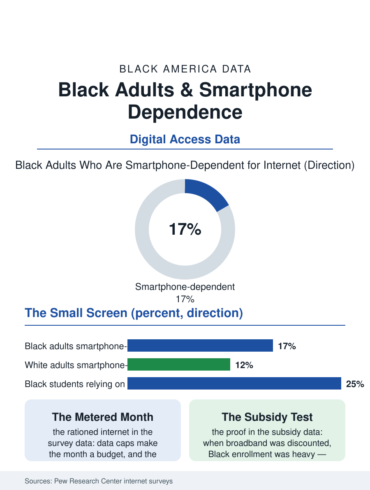

Black Census
The Internet in a Phone: Black Smartphone Dependence
About one in six Black adults depends on a smartphone alone for internet, running the whole digital state through a metered small screen. The smartphone file.

For a large share of Black Americans, the internet is a phone. The Pew Research Center's surveys find Black adults substantially more likely than white adults to be smartphone-dependent, owning the phone but no home broadband connection, conducting the whole of digital life, banking, benefits, homework, health, through a small screen and a data plan. This article reads the smartphone file, the access layer beneath nearly every other system in this atlas.
Dependence, Defined
Pew's measure counts adults who own a smartphone while lacking traditional home broadband, and its racial pattern is consistent across survey years: Black smartphone dependence runs roughly one and a half to two times the white rate, with Hispanic adults similarly elevated, and the dependence concentrates, as every access variable does, among younger and lower-income adults. The dependence is not a preference revealed in a fair market; the same surveys record the reasons in the respondents' own ordering, broadband's price first, availability and credit requirements in the housing stock second, and the phone's sufficiency as the rationalization of a constrained choice. What dependence means in practice is a rationed internet: data caps that make the month a budget, video and large downloads deferred to wifi found at work, school, or the library, and the forms of digital life that assume a large screen and an unmetered pipe, the multi-tab job application, the homework portal, the telehealth video visit of the health file, performed under friction or not performed. The device's quality layers in: the dependent population's phones skew older and cheaper, storage-starved, cracked-screened, shared within households in patterns the one-person-one-device statistics of the affluent surveys never contemplate.
Homework, Benefits, and the Small Screen
The homework gap gave this file its famous name: the Pew and education surveys found Black and low-income students substantially more likely to rely on a phone for schoolwork and to report being unable to complete assignments for lack of reliable access, the gap the pandemic converted from an inconvenience into an educational shutdown for the dependent population when school itself moved online. The state's own services moved onto the same small screen from the other side: benefits applications, unemployment insurance, court and health systems digitized their front doors during the same years, frequently as mobile-hostile forms and desktop-assumed portals, so the dependent user's phone became the waiting room of every agency in this atlas, with the session timeouts and document upload requirements deciding cases the merits never reached. The banking and commerce files record the adaptation from below: the phone-first financial life, mobile banking, Cash App and its kin, the check-cashing functions absorbed into apps, is disproportionately a Black financial culture, built not from novelty-seeking but from the branch desert and the device at hand, and its innovations, instant transfer as a social protocol, phone-based hustles as businesses, now diffuse outward into the general population's habits, the familiar direction of cultural flow in the technology files.
The Subsidy and the Buildout
Policy has attacked the file from both ends with instructive incompleteness. The subsidy end, the federal broadband benefit programs that enrolled tens of millions of households at their peak, demonstrated the demand curve's shape: enrollment among Black households was heavy, proving price the binding constraint, and the programs' funding lapse returned the dependent population to rationing on a date the surveys could watch. The buildout end, the infrastructure law's broadband billions, addresses the availability map whose rural and inner-city holes the deployment data record, on construction timelines measured in years. Between the two sits the library and school layer, the hotspot lending and the bus wifi and the homework hub, the institutional wifi the dependent population plans its digital errands around, an infrastructure of borrowed bandwidth that the usage data show functioning as a real, if unglamorous, public utility. The smartphone file closes on the device's glow at the kitchen table, where the whole of the modern state's and market's business with a citizen is transacted through five inches of glass on a metered plan. The surveys will keep calling it dependence. The file's data suggest the more precise word is adaptation, brilliant, complete, and charged by the month, by the very people the broadband map left for last, and the measure of the buildout's success will be the survey year when the Black dependence rate and the white rate finally describe the same choice instead of different constraints.
More in Black Census
The Black Population of the United States: Size, Definitions, and Distribution
The Black population of the United States totals 52.8 million — 15.4 percent of the nation. How the Census Bureau defines and counts the population, and where it lives.
Black Median Household Income in the United States
Black median household income stands at $56,490 in the Census Bureau's annual income report — how the figure is measured, how it compares, and what drives it.
The Black Poverty Rate: Levels, Children, and the Long Trend
The official Black poverty rate is 17.1 percent — against 11.1 percent nationally and 7.7 percent for non-Hispanic White Americans. How poverty is measured and what the data show.
Source: Pew Research Center, Internet and Technology surveys; Federal Communications Commission broadband deployment data.